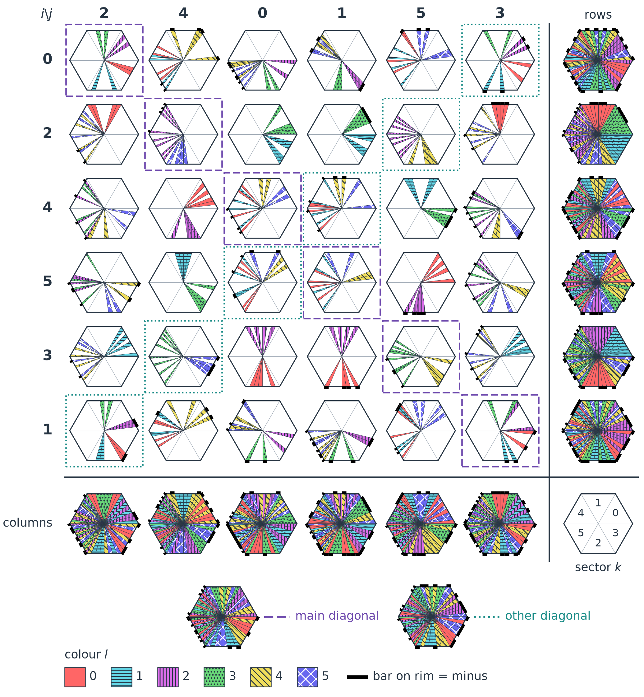
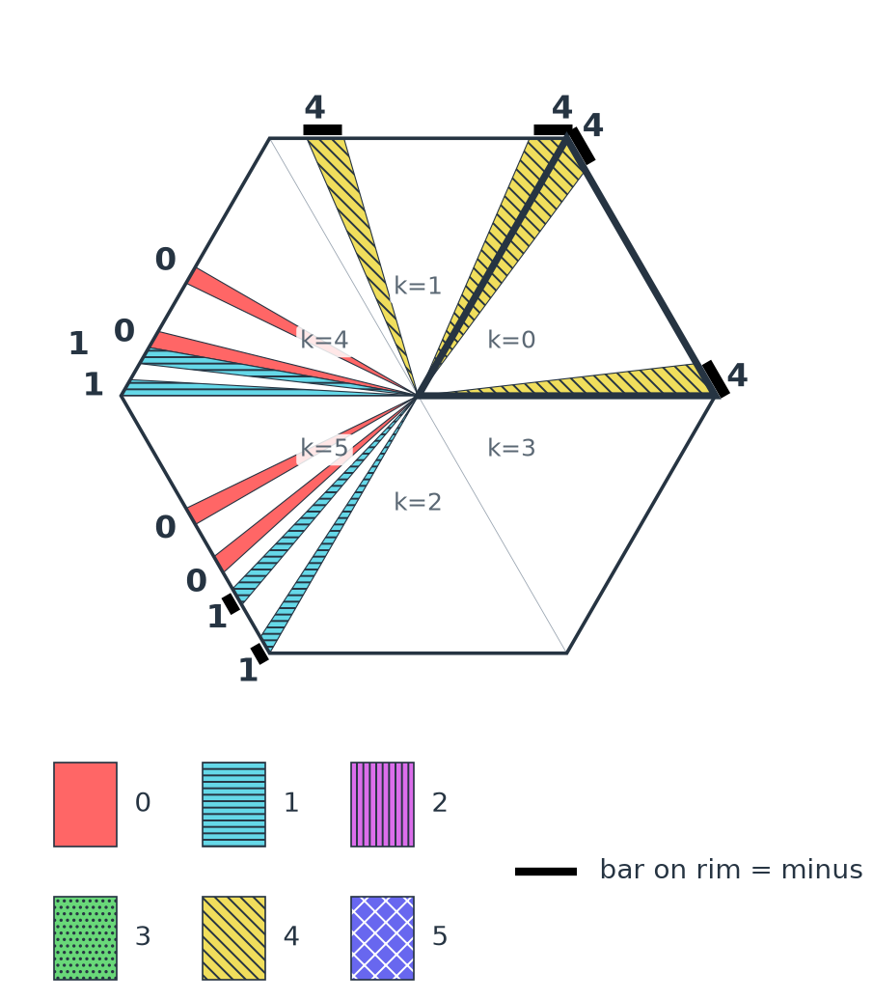
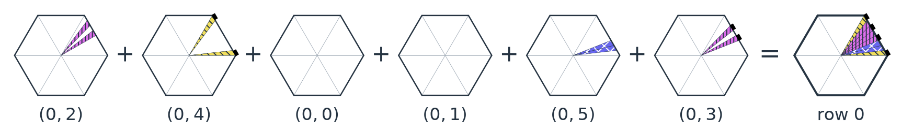

AME state – geomagic representation of a real AME$(4,6)$ state
update: 2026-10-09 by W. Bruzda
To be published soon...
The picture below encodes a real $36\times 36$ matrix $U^{\rm g}$, the two-unitary matrix of an AME state of four six-level systems. All of its entries can be read off the picture by counting and no color vision and no ruler are needed. All indices start at 0.

how to read the picture
Each hexagon of the central $6\times 6$ array is a cell $(i,j)$. One should read $i$ and $j$ from the printed labels, not from the position. Each hexagon is divided into six triangles, the sectors $k=0,\ldots,5$ (see the sector key). Each thin triangle inside has a color $l=0,\ldots,5$, shown both by its color and by its texture: 0 plain, 1 horizontal lines, 2 vertical lines, 3 dots, 4 diagonal lines, 5 crosses. A black bar on the outer rim means a minus sign. The hexagons around the array only show how rows, columns and diagonals fit together and they add no entries.
- Choose a cell $(i,j)$, a sector $k$ and a color $l$.
- Count the thin triangles of color $l$ in sector $k$ of that cell. There are always 0, 2 or 4 of them.
- Read the entry $U^{\rm g}_{6i+j,6k+l}$ from the table, with a minus sign if the triangles have a black bar on the rim. With no triangles the entry is 0.
| 2 triangles | 4 triangles | |
|---|---|---|
| sectors 0, 1, 2, 3 | $\pm 1/2$ | $\pm 1/\sqrt{2}\approx\pm 0.707$ |
| sectors 4, 5 | $\pm 1/(2\sqrt{2})\approx\pm 0.354$ | $\pm 1/2$ |
The reason: every thin triangle covers $1/8$ of the outer edge in sectors 0–3 and $1/16$ in sectors 4 and 5, so its area is $1/8$ or $1/16$ of a sector. The total area $A_{ijkl}$ of the triangles, in units of one sector, is the square of the entry.
example
Cell $(0,4)$ is the second hexagon of the top row. Its sector 0 (outlined, upper right) contains two yellow triangles with diagonal lines, so $l=4$ and both have a black bar on the rim. Two triangles in sector 0 give $1/2$ and the bar gives the sign: $U^{\rm g}_{4,4}=-1/2$.

geomagic square
All 36 hexagons are cut along the same thin triangles. Each thin triangle appears in exactly six cells: one in every row, one in every column and one on each main diagonal. Therefore the pieces of every row, column and main diagonal fill a full hexagon exactly once, as shown below for sector $0$ of the top row. Every piece has the area of one sector and no two of the $36$ pieces have the same shape, even after rotation or reflection.

The paper shows the same matrix in another drawing, in which the thin triangles have unequal widths and hatching marks the minus signs. Areas, hence all entries, are the same in both drawings.
from $U^{\rm g}$ to the sparse matrix
$U^{\rm g}$ is a locally rotated form of a sparse matrix $U$ with only 60 nonzero entries, equal to $1$ or $\pm 1/\sqrt{2}$: \begin{equation} U=(O_A\otimes O_B)^{\mathsf T}\,U^{\rm g}\,(O_C\otimes\mathbb{I}_6), \end{equation} where \begin{equation} {\rm H}=\frac{1}{\sqrt{2}}\left[\begin{array}{rr}1&1\\1&-1\end{array}\right]\qquad\text{and}\qquad {\rm X}=\left[\begin{array}{rr}0&1\\1&0\end{array}\right] \end{equation} are the Hadamard and the Pauli matrix, so that ${\rm HX}$ is ${\rm H}$ with its two columns swapped. The local maps act on pairs of levels: $O_A={\rm H}\oplus\mathbb{I}_4$ (levels 0, 1), $O_B={\rm H}\oplus{\rm H}\oplus\mathbb{I}_2$ (levels 0, 1 and 2, 3) and $O_C=\mathbb{I}_4\oplus{\rm HX}$ (levels 4, 5). With $U_{6i+j,6k+l}=T_{ijkl}$, the normalized state is \begin{equation} |\psi\rangle=\frac16\sum_{i,j,k,l}T_{ijkl}|i\rangle_A|j\rangle_B|k\rangle_C|l\rangle_D. \end{equation}
All pictures on this page are made by Claude (Anthropic, Claude Opus 5.5).